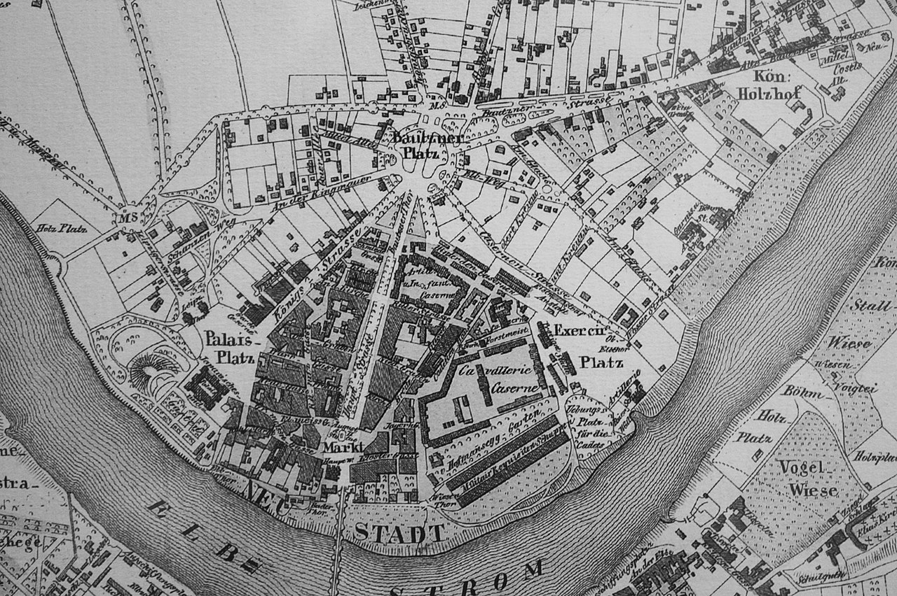
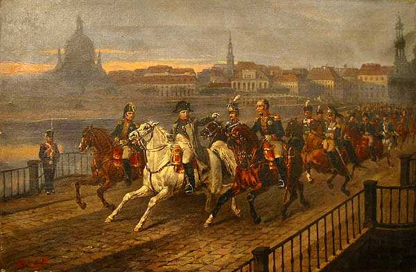
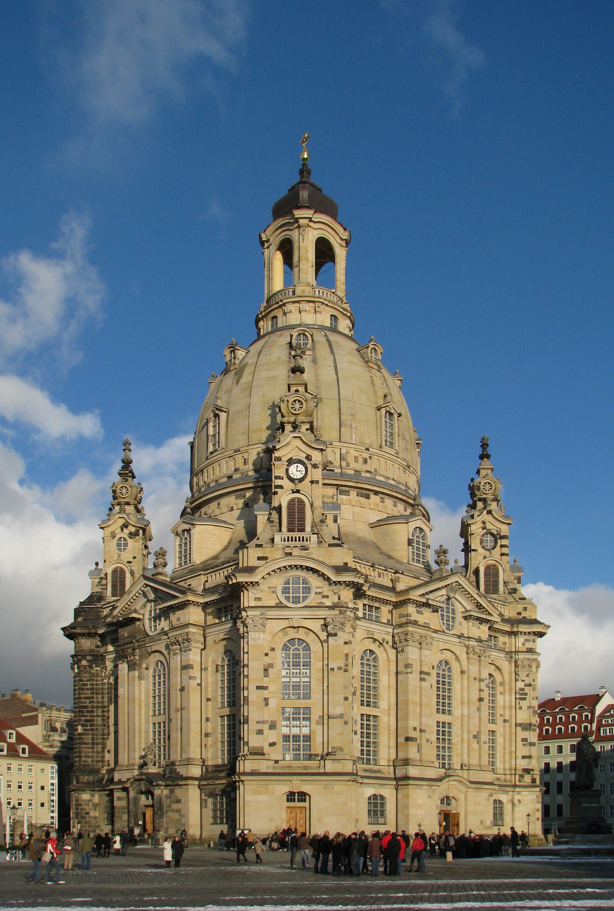
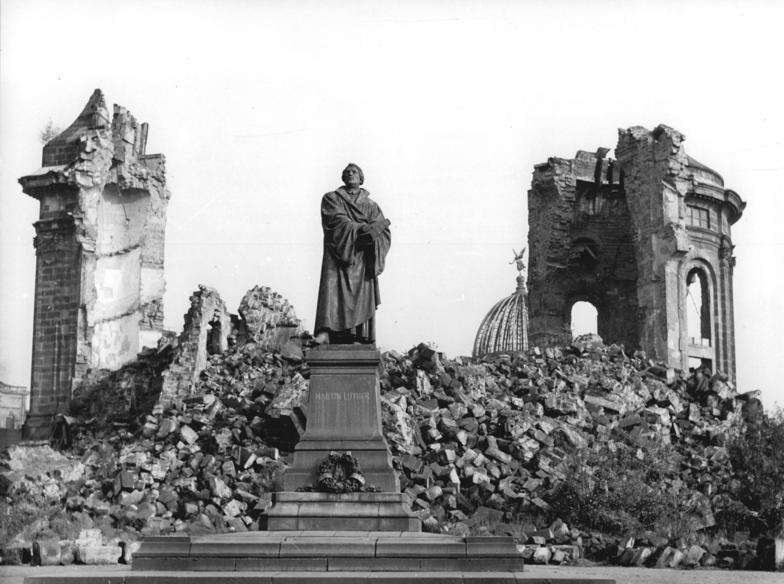
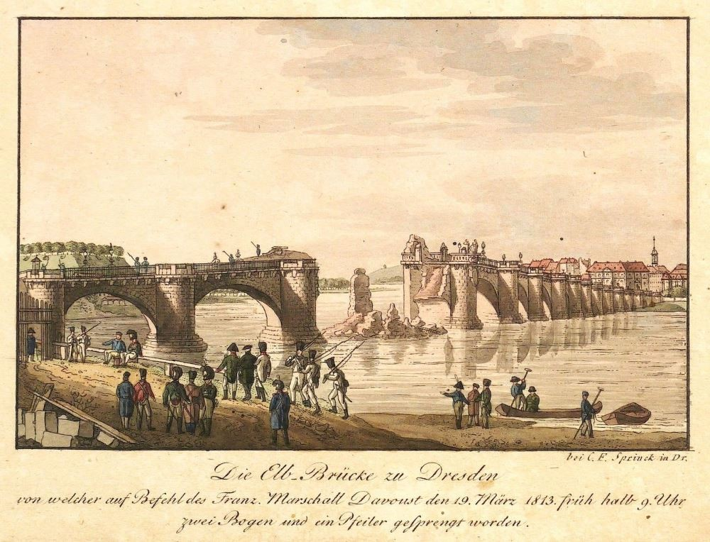
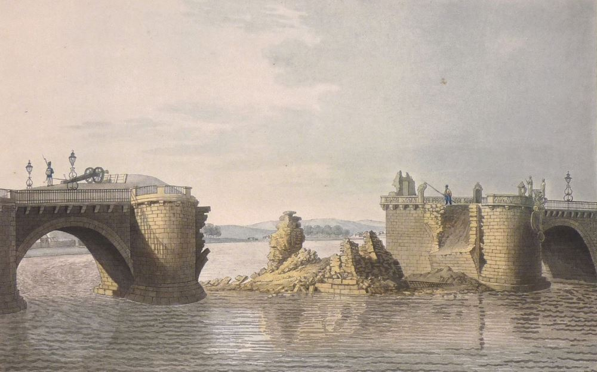
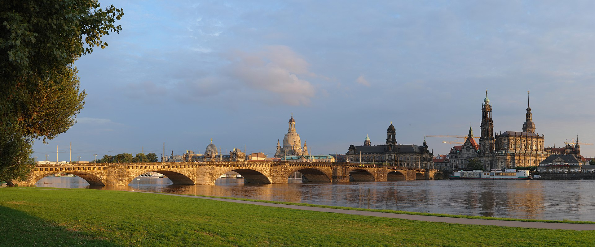
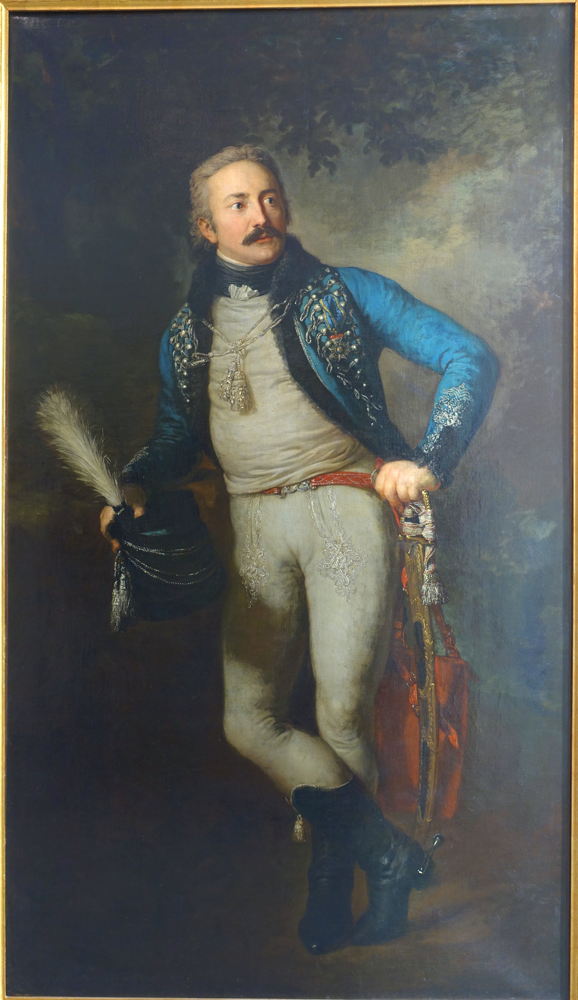

끊어진 다리, 흔들리는 동맹 - 아우구스투스 다리의 의미
게시: 2022-06-20T06:30:26+09:00
이미 베를린이 비트겐슈타인 휘하의 러시아군 손에 들어가고 드레스덴도 곧 빈칭게로더 손에 들어갈 것이 명약관화했던 3월 중순 즈음, 외젠에게는 6만이 채 안되는 병력을 유지하고 있었는데 그 중에는 다부 지휘 하에 드레스덴에 있던 7천5백도 포함되어 있었습니다. 나폴레옹의 군단들 중에서도 언제나 병력 3만 이상의 특별히 강력한 군단만을 거느리던 다부가 1개 사단 수준에도 미치지 못하는 병력만을 이끌고 있던 것은 당시 약화된 그랑다르메의 신세를 보여주는 일입니다. 그런 상황 속에서도 나폴레옹은 다부는 특별 대우해야 한다고 생각했습니다. 그는 레이니에(Reynier) 장군이 러시아군에 쫓겨 드레스덴에서 철수하는 것은 뭐 있을 수 있는 일이지만, 에크뮐 대공(prince d'Eckmühl, 즉 다부)이 그런 모욕을 당하도록 방치할 수는 없다고 언급했습니다. 이건 나폴레옹이 다부 개인의 명예를 존중하기 때문이라기보다는, 다부 원수의 명성이 가지는 의미가 다른 남달랐다기 떄문이었습니다. 그런 일이 발생한다면 그건 나폴레옹 자신이 드레스덴을 지키고자 했지만 역부족이었다는 것을 유럽 전역에 보여주는 모양새가 된다는 것이 나폴레옹의 우려였습니다. 그래서 다부는 러시아군이 접근하기 훨씬 전인 3월 18일, 마그데부르크에 있던 외젠의 사령부로 합류하기 위해 일찌감치 드레스덴에서 철수했습니다. 문제는 철수하면서 다부가 드레스덴의 아우구스투스 다리(Augustusbrucke)를 폭파했다는 것입니다. 이 다리는 엘베 강 남쪽의 드레스덴 시내와 북쪽 강변에 위치한 드레스덴 신시가지(Neustadt)을 가로질러 놓인 아름다운 아치 구조의 석조교로서, 당시 유럽에서 아름답기로 손꼽히는 다리였고 드레스덴 주민들의 긍지와도 같은 다리였습니다. 어떻게 생각하면 철수하는 프랑스군 입장에서는 추격해오는 러시아군을 막기 위해 다리를 폭파하는 것은 기본 중의 기본이라고 할 수 있습니다. 그러나 이때의 상황은 몇 개월 전 베레지나 강의 부교를 끊을 때처럼 급박한 상황은 아니었습니다. 러시아군이 바로 발뒤꿈치까지 따라 붙어 1분 1초가 아까운 상황도 아니었고, 어차피 그 일대의 엘베 강변은 인구 밀집 지역이라 각종 보트와 자재도 많았기 때문에 러시아군은 어렵지 않게 부교를 놓을 수도 있었습니다. 무엇보다, 드레스덴 주민들이 이 다리에 가지고 있던 애착을 잘 알고 있던 작센 국왕 프리드리히 아우구스투스가 특별히 편지를 보내 다부에게 이 다리를 폭파하지 말라고 사정을 하기도 했습니다.

(이 지도는 1837년의 것으로, 북쪽 강변이 드레스덴 신시가지(Neustadt)입니다. 남쪽 강변에는 드레스덴 시내가 있는데, 이 둘을 연결하는 아우구스투스 교(Augustusbrucke)의 모습도 보입니다.)

(다부가 일부를 폭파했다는 드레스덴 아우구스투스 다리는 당시 유럽에서 가장 아름다운 다리라고 소문이 났었습니다. 그런 평가에도 불구하고 그 아름다운 다리를 그린 유명한 회화 작품은 거의 없나 봅니다. 그러나 그 외에도 드레스덴에는 여러가지 역사적인 건물이 많습니다. 나폴레옹이 드레스덴의 다리를 건너는 모습을 그린 저 그림(1895년에 그려진 상상화이긴 합니다...)의 배경에 보이는 성당만 해도 많은 사연이 있습니다.)

(드레스덴의 다리를 건너는 나폴레옹의 그림 배경에 나온 저 성당은 사실 카톨릭 성당이 아니라 개신교 교회입니다. '드레스덴 성모교회'(Dresdner Frauenkirche)라는 이름의 저 교회는 원래 카톨릭 성당으로 11세기에 지어졌다가 종교개혁 이후 18세기 초에 원래의 성당을 뜯어내고 교회로 새로 지어진 것입니다. 잘 쓰던 교회 건물을 굳이 뜯어내고 새로 지은 이유가 종교 및 왕위 계승 관계로 얽힌 유럽의 복잡한 역사를 엿보게 해주는 것인데, 당시 작센 선제후였던 아우구스투스 2세(Augustus II)가 폴란드 왕으로 선출되기 위해 카톨릭으로 개종을 한 것과 관련 있습니다. 작센 선제후는 전통적으로 '종교개혁의 수호자'라고 불렸는데도 이렇게 정치적 목적으로 개종을 하자 작센 국민들의 반발이 심했고, 심지어 선제후의 와이프도 개종은 물론 나중에 남편의 폴란드 국왕 즉위식에도 불참할 정도였습니다. 그런 불만을 잠재우고 작센 국민들에게는 개종을 강요하지 않겠다는 약속의 표시로 저 으리으리한 돔(cupola)을 갖춘 새 교회를 지었습니다.)

(드레스덴 성모교회는 잘 아시는 것처럼 WW2 때 연합군의 폭격으로 완전히 파괴되었는데, 동독 정부는 나찌 독일의 과오를 반성한다는 뜻으로 교회를 다시 짓지 않고 방치해 두었습니다. 아마 공산주의 정권에서 교회를 다시 짓고 싶지는 않았겠지요. 그러다 독일이 통일된 이후인 1994년부터 복원 공사가 시작되었고, 2005년에 완공되었습니다.) 그러나 강철 원수 다부는 정말 피도 눈물도 없이 그저 군사 교과서에 따라 다리를 폭약으로 날려버렸습니다. 아우구스투스교는 12개의 아치를 가진 튼튼한 다리였으므로 이 다리 전체를 날려버리기 위해서는 폭약이 너무 많이 필요했으므로, 프랑스군은 교각 1개와 아치 2개만을 폭파했습니다. 이 파괴 행위는 생각보다 많은 사람들에게 충격을 주었고, 드레스덴 주민들 뿐만 아니라 작센 전체에게 프랑스군에 대한 반감을 심어주었습니다. 당시 러시아군에서 복무하던 전쟁론의 저자 클라우제비츠도 이 사건에 대해 언급하며 '자신이 본 다리 중 가장 아름다운 이 다리를 프랑스군이 폭파하여 아치 2개와 교각 하나가 흔적도 없이 사라졌다'라고 기록했고, 러시아군과 함께 움직이던 영국 대사 캐쓰카트 장군이 영국 외무상 캐슬레이에게 보내는 보고서에도 언급되었습니다. 심지어 나폴레옹조차도 외젠에게 보내는 편지에서 '다부의 다리 폭파는 쓸데없이 작센인들에게 부정적인 영향만 주었다'라고 불평할 정도였습니다.

(1813년 3월, 다부가 폭파하고난 뒤의 드레스덴 아우구스투스 다리입니다. 기록에 2개의 아치와 1개의 교각(pier)가 날아갔다고 되어 있는데, 그림에도 그렇게 그려졌네요.)

(폭파된 아우구스투스 다리를 그린 또다른 그림입니다.) 실제로 이 다리의 폭파는 군사적으로 큰 의미를 갖지는 않았습니다. 정작 빈칭게로더는 6일이나 지난 3월 24일에야 엘베 강 건너편의 드레스덴 노이슈타트, 즉 신시가지에 도착했는데, 그의 선봉 역할을 하던 코삭 부대들은 이미 다양한 방법으로 여러 곳에서 엘베 강을 건너 프랑스군과 작센군의 뒤를 따라 다니며 위협을 가했기 때문입니다. 뿐만 아니라 블뤼허의 본대도 3월 31일 부교를 놓고 엘베 강을 어렵지 않게 건넜고, 폭파된 아우구스투스 교도 목재를 이용하여 곧 수리되었습니다. 결국 다리 폭파는 러시아-프로이센 연합군이 드레스덴에 무혈입성하는데는 아무런 지장을 주지 못했을 뿐만 아니라, 오히려 도움이 되었습니다. 드레스덴 주민들의 감정이 반(反)프랑스 쪽으로 급격히 변화했기 때문이었습니다.

(긴급히 수리된 아우구스투스 다리의 모습입니다.)

(다부가 폭파했다는 드레스덴 아우구스투스 다리의 현재 모습입니다. 실은 다부가 폭파한 다리는 12개의 아치를 가지고 있었던 것인데, 저 다리는 9개의 아치만 가지고 있습니다. 현재의 다리는 20세기 초에 새로 지어진 것으로서, 엘베 강을 오가는 선박들을 위해 아치를 9개로 줄였다고 합니다.) 별 의미없이 드레스덴 일대에 남아있던 르콕(Karl von Lecoq) 장군의 작센군 2천은 결국 3월 27일 후퇴를 시작했습니다. 문제는 여기서 터져나오기 시작했습니다. 다부가 마그데부르크를 향해 이동할 때도 토르가우-비텐베르크-마그데부르크로 이어지는 동일한 엘베 강변 남서쪽 강변 루트를 이용했는데, 르콕의 작센군은 그 뒤를 따르지 않고 토르가우로 들어가버렸습니다. 이것까지도 큰 문제는 아니었습니다. 문제는 이후부터 토르가우의 사령관인 틸만(Johann von Thielmann) 장군이 프랑스군이 토르가우에 입성하는 것을 금지시켰다는 것이었습니다. 그렇다고 이것이 본격적인 탈진영 움직임은 아니었습니다. 토르가우는 프랑스군뿐만 아니라 러시아, 프로이센 등 모든 교전국에 대해 출입을 거부했기 때문이었습니다. 하지만 이로 인해 러시아-프로이센 연합군은 곧 작센이 자기들 편으로 전향할 것이라고 믿게 되었고, 토르가우에 대해서도 인근에 견제 병력을 배치했을 뿐 공성포로 공격하는 일은 하지 않았습니다. 이렇게 토르가우가 갑자기 중립국 행세를 시작한 것은 물론 틸만 장군의 단독 결정은 아니었습니다. 바이에른 레겐스부르크에 있던 국왕 프리드리히 아우구스투스가 엄정 중립을 지키라는 명령을 보내왔기 때문이었습니다. 프리드리히 아우구스투스는 이 조치에 이어 4월 13일에는 아예 거처를 오스트리아 영토였던 보헤미아의 프라하로 옮깁니다. 물론 아직은 나폴레옹과 긴밀히 연락하며 라인연방과의 견고한 동맹을 강조하는 입장이었지만, 작센 국왕의 이런 움직임은 나폴레옹에게나 연합군측에나 많은 고민과 희망을 안겨주는 것이었습니다.

(틸만 장군입니다. 그는 나폴레옹보다 4세 연상이었고, 1806년 프로이센과 달갑지 않은 동맹을 맺고 있던 작센군을 이끌고 예나 전투에 참전했었습니다. 예나-아우어슈테트 전투가 나폴레옹의 압승으로 끝난 뒤 평화 사절의 일원으로 나폴레옹을 만나본 그는 이후 열렬한 나폴레옹 숭배자가 되었다고 합니다. 그는 1812년 러시아 원정에 나선 작센군의 지휘관으로서 보로디노 전투에서도 용감히 싸워 나폴레옹의 치하를 받았습니다. 그러나 역시 러시아 원정의 실패와 전세의 역전은 그의 나폴레옹에 대한 존경심에도 큰 타격을 주었습니다. 토르가우에서 중립군 행세를 하던 그는 나중에 나폴레옹의 협박을 받은 프리드리히 아우구스투스로부터 '토루가우 요새를 프랑스군에게 넘기라'는 명령을 받자 지휘관직을 사임하고 아예 프로이센-러시아 연합군에 개인 자격으로 투신했습니다. 이후 반나폴레옹 진영에서 활약한 그는 1815년 워털루 전투에서도 큰 공을 세웠습니다. 워털루 근처 와브르(Wavre)에서 그는 그루시(Grouchy)의 프랑스군 3만2천을 2만의 병력으로 붙들고 늘어졌고, 덕분에 그루시는 워털루 현장에 결국 제때 당도하지 못했습니다.) 이렇게 일단 프로이센-러시아 연합군의 1차 목표, 즉 베를린과 드레스덴 점령은 너무나 손쉽게 이루어졌습니다. 뿐만 아니라 러시아군과 프로이센군은 다리 폭파에 화가 난 작센 주민들의 진심어린 환영을 받았습니다. 작전을 시작하기 전에 샤른호스트가 세웠던 작전, 즉 베를린과 드레스덴 2개 방향으로 병력을 분산 진격시켜 최대한 많은 지역을 점령하고 인원과 물자를 확보한다는 계획은 모든 것이 척척 맞아들어갔습니다. 적어도 이때만 해도 그렇게 보였습니다. 그러나, 이것이 속빈 강정이었다는 것이 곧 드러납니다. Source : The Life of Napoleon Bonaparte, by William Milligan Sloane Napoleon and the Struggle for Germany, by Leggiere, Michael V
https://en.wikipedia.org/wiki/Frauenkirche,_Dresden https://altesdresden.de/hist_idx.cgi?action=house&id=aubaz00&redirect=true https://en.wikipedia.org/wiki/Augustus_Bridge https://en.wikipedia.org/wiki/Innere_Neustadt_(Dresden) https://en.wikipedia.org/wiki/Johann_von_Thielmann